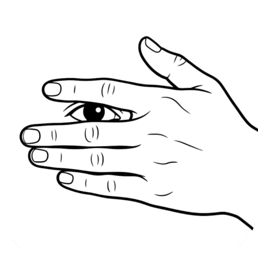

留白 BlankTop菜单栏折叠是个小功能，但每个细节都要做选择：用箭头还是开关、要不要缓存、什么时候扫描、 颜色从哪来。这篇发布说明把每个卖点背后的理由写出来，包括它们各自的代价。
1.1 新增「无聊盒子」和「抓狂模式」两种玩法，底层仍然是同一套折叠逻辑——玩法可以回 首页看。
不是“再做一个菜单栏工具”，而是解决 macOS 27 上一个具体的新问题。
macOS 27 把整条菜单栏重做成了一个整体窗口。这个改动让过去所有同类工具——Bartender、Ice、 Hidden Bar——赖以工作的“把图标窗口推到屏幕外”彻底失效，它们在 27 上要么什么都不藏，要么乱藏。
更麻烦的是：一旦装了很多菜单栏 App，图标会挤到刘海底下、挤到当前 App 的菜单后面，你看不见也点不到。 系统设置只能整体隐藏，没法“只收起左边那几个”。
留白就是在补这个洞：一个开关，把开关左边的图标收起来，右边保持可见，用系统自己的方式决定谁在哪一边。
每条都写了「为什么」和「代价」，因为不谈代价的卖点没意义。
菜单栏里是一个 iPhone 式小开关，不是 ‹ › 箭头。
箭头表达的是“方向”——你得先想一下“这个箭头是让我往哪边收”。开关表达的是“状态”—— 圆点在右、底板绿色就是开着，在左、灰色就是关着，不需要学习成本。 而且开关的方向和结果同向：往右拨，图标朝右展开；往左拨，左边收起。 箭头一旦做成左右两个字符，还容易和系统的返回/前进按钮混淆。
代价：开关比箭头宽，占更多菜单栏空间；而且开关天然带“开/关”语义， 一旦你对“开”的理解和我不同，就会觉得反了——所以它可以在菜单里一键切换样式，18 种都随你。
开关打开时的绿是 #79BC51，直接从系统里相邻图标的绿色采样来的。
菜单栏是个很挤的地方，任何高饱和的颜色都会“抢视线”。我不想让一个工具图标成为整条栏里最亮的东西， 所以取的是环境里已经存在的绿——它和邻居是同一族颜色，你的眼睛不会每次扫过都被拽一下。 关闭状态的底板用 15% 的深灰而不是红色：红色在 macOS 语义里属于危险和错误， 而“收起图标”只是个中性状态，标红会让人误以为出了问题。
代价：颜色偏低饱和，强光或低对比度屏幕上不容易一眼分辨开/关——所以圆点的位置才是主要信号，颜色只是辅助。
不缓存布局，一次折叠扫遍所有 App 的菜单栏图标，热态 20–30 ms。
这是踩过坑之后的选择。为了快，最初做了缓存：第一次折叠算一遍就记住。结果你一旦用 ⌘ 拖动图标 改变位置，缓存就和现实对不上了，点开关会“没反应”——因为程序还按旧地图在藏东西。 正确性比省 200 毫秒重要得多。 而“每次扫描会不会卡”这个问题，用并发解决：每个 App 的辅助功能查询互相独立， 60 多个 App 并行跑，从串行的约 1 秒压到二三十毫秒，快到感觉不到它在扫。
代价：第一次折叠（冷态）仍要约 250 ms；且每次都要拿到辅助功能权限，没授权就完全没法工作。
哪些图标收起，由你在菜单栏上按住 ⌘ 拖动决定，顺序 macOS 自己记住。
自建一套“勾选哪些 App 隐藏”的列表，意味着要维护一份自己的布局数据库：App 改名、重装、 图标增减都会让这份数据腐烂。而 ⌘ 拖动是系统原生能力，位置存在系统的偏好里， 重启、换主题、系统升级都跟着走。工具只负责读“谁在开关左边”，不负责记。
代价：第一次用需要手动拖几下，说明书里必须写清楚；也没法按“场景”一键切换布局。
App 必须放在 /Applications，否则折叠会连它自己都藏掉。
这是系统的硬限制，不是我的选择：macOS 27 的菜单栏白名单只对 /Applications 下的
应用生效，放在 ~/Applications、桌面或 build 目录里，即使把 bundle id 明确写进白名单也没用。
我在开发时踩到过这个坑（自己编译的 App 放在别的目录，行为完全不同），所以宁可在首页就写明白，
也不想让你装完发现“怎么时好时坏”。
代价：不能做成“解压即用”的绿色软件；你的其它菜单栏 App 也得待在 /Applications 才能保持可见。
隐藏基于 macOS 27 内部考试锁定模式的菜单栏白名单，没有公开接口可用。
Apple 没有提供“隐藏别人的菜单栏图标”的公开 API。27 上可行的路径只有一条：
调用系统内部给考试模式用的 allow-list（MenuBarClientCore），把“允许显示的 App”
列给系统，剩下的由系统自己隐藏和重排。
既然用了私有接口，就得为它失效做好准备：所有调用都检查可用性，任何一步失败都立刻恢复正常显示，
绝不允许出现“图标被藏了但收不回来”的状态。
代价：Apple 改动这个框架时，工具会直接失效（同类工具无一例外）； 也意味着它不可能上架 App Store。
全部源码公开，编译不需要 Xcode，App 不联网。
这个工具必须拿到「辅助功能」权限——那是 macOS 里权限最大的一类授权，能读到所有窗口和控件。 要求你信任一个闭源、还不能审计的二进制，不合理。开源是这类工具的基本礼貌： 你能看到它只做了三件事（读图标位置、提交白名单、撤销白名单），没有任何别的动作。 顺带的好处是编译门槛低：Command Line Tools 就够，5 秒出包。
代价：没有签名公证，首次打开需要在系统设置里手动放行；每次重新编译还要重新授权一次。
开关本身就是状态指示：位置是主信号，颜色是辅助。


不吹“最强”，只说定位。
| 留白 BlankTop | Bartender | Ice / Thaw | Hidden Bar | |
|---|---|---|---|---|
| 价格 | 免费 | 付费 | 免费 | 免费 |
| 开源可审计 | MIT | 否 | GPL | MIT |
| macOS 27 隐藏 | 是 | 是 | 部分版本 | 1.11.1+ |
| 只收起一部分图标 | 是 | 是 | 是 | 是 |
| 分组 / 规则 / 搜索 | 不做 | 丰富 | 部分 | 不做 |
| 界面复杂度 | 一个开关 | 完整设置面板 | 设置面板 | 一条分隔线 |
| 体积 | 约 630 KB | 数十 MB | 数 MB | 约 1 MB |
结论很简单：如果你要按 App 分组、按场景切换布局、搜索菜单项，用 Bartender 或 Ice； 如果你只是想把左边那堆不常用的图标收起来，留白更轻。
/Applications，包括想保持可见的其它 App